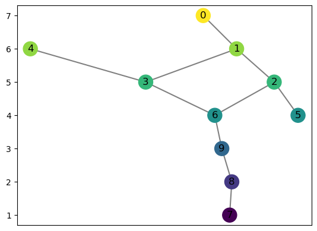
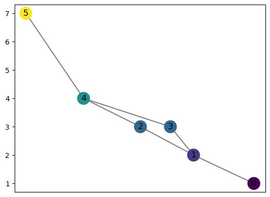
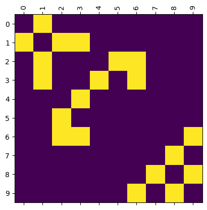
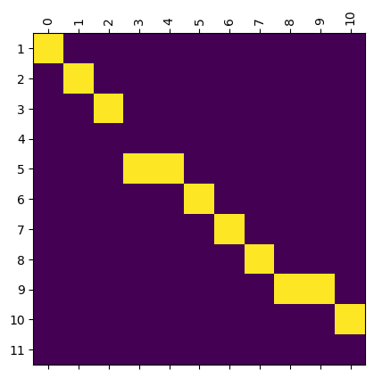

Sandbox for testing purposes
[9]:
import networkx as nx
import numpy as np
import matplotlib.pyplot as plt
import pandas as pd
from scipy.linalg import block_diag
from cereeberus import EmbeddedGraph, ReebGraph
import cereeberus.data.ex_mappergraphs as ex_mg
# from cereeberus.data.ex_mergetrees import randomMergeTree
from cereeberus.dist.interleave import Interleave
[2]:
M_1 = ex_mg.dancing_man(delta = 1)
M_2 = ex_mg.torus(delta = 1)
M_2.f[5] = 7
M_2.set_pos_from_f()
[3]:
M_1.draw()

[4]:
M_2.draw()

[8]:
myInt = Interleave(M_1, M_2)
for eps in ['0','n']:
myInt.draw_matrix(myInt.I['F'][eps])


[6]:
[10]:
myInt.draw_matrix(myInt.I['F']['n'])
0 8
[[1.]]
[[1.]]
[[1.]
[0.]]
[[1. 1.]]
[[1.]]
[[1.]]
[[1.]]
[[1. 1.]]
[[1.]
[0.]]
[11]:
myInt.block_dict_to_matrix(myInt.I['F']['0'])
1 7
[[1.]]
[[1.]]
[[0.]
[1.]]
[[1. 1.]]
[[1. 1.]]
[[1. 1.]]
[[1.]
[0.]]
[11]:
{'rows': [1, 2, 3, 4, 5, 6, 7, 8, 9],
'cols': [7, 8, 9, 5, 6, 2, 3, 1, 4, 0],
'array': array([[1., 0., 0., 0., 0., 0., 0., 0., 0., 0.],
[0., 1., 0., 0., 0., 0., 0., 0., 0., 0.],
[0., 0., 0., 0., 0., 0., 0., 0., 0., 0.],
[0., 0., 1., 0., 0., 0., 0., 0., 0., 0.],
[0., 0., 0., 1., 1., 0., 0., 0., 0., 0.],
[0., 0., 0., 0., 0., 1., 1., 0., 0., 0.],
[0., 0., 0., 0., 0., 0., 0., 1., 1., 0.],
[0., 0., 0., 0., 0., 0., 0., 0., 0., 1.],
[0., 0., 0., 0., 0., 0., 0., 0., 0., 0.]])}
[ ]:
[ ]:
[ ]:
[ ]:
[ ]:
[14]:
myInt.I['F']['0']
[14]:
{7: {'rows': [8, 9],
'cols': [0],
'array': array([[1.],
[0.]])},
6: {'rows': [7], 'cols': [1, 4], 'array': array([[1., 1.]])},
5: {'rows': [6], 'cols': [2, 3], 'array': array([[1., 1.]])},
4: {'rows': [5], 'cols': [5, 6], 'array': array([[1., 1.]])},
1: {'rows': [1], 'cols': [7], 'array': array([[1.]])},
2: {'rows': [2], 'cols': [8], 'array': array([[1.]])},
3: {'rows': [3, 4],
'cols': [9],
'array': array([[0.],
[1.]])}}
[35]:
Blocks = myInt.I['F']['0']
a = np.min(list(Blocks.keys()) )
b = np.max(list(Blocks.keys()) )
print(a,b)
rows = [Blocks[i]['rows'] for i in range(a, b+1)]
rows = sum(rows, []) # flatten the list
cols = [Blocks[i]['cols'] for i in range(a, b+1)]
cols = sum(cols, []) # flatten the list
arrays = [ Blocks[i]['array'] for i in range(a, b+1)]
for i in range(len(arrays)):
print(arrays[i])
BigMatrix = block_diag(*arrays)
print(BigMatrix)
1 7
[[1.]]
[[1.]]
[[0.]
[1.]]
[[1. 1.]]
[[1. 1.]]
[[1. 1.]]
[[1.]
[0.]]
[[1. 0. 0. 0. 0. 0. 0. 0. 0. 0.]
[0. 1. 0. 0. 0. 0. 0. 0. 0. 0.]
[0. 0. 0. 0. 0. 0. 0. 0. 0. 0.]
[0. 0. 1. 0. 0. 0. 0. 0. 0. 0.]
[0. 0. 0. 1. 1. 0. 0. 0. 0. 0.]
[0. 0. 0. 0. 0. 1. 1. 0. 0. 0.]
[0. 0. 0. 0. 0. 0. 0. 1. 1. 0.]
[0. 0. 0. 0. 0. 0. 0. 0. 0. 1.]
[0. 0. 0. 0. 0. 0. 0. 0. 0. 0.]]
[ ]:
[ ]:
[ ]:
[ ]:
[9]:
n = myInt.n
F = myInt.F['0']
F_n, I_0 = F.smoothing(n, return_map = True)
[10]:
I_0
[10]:
{7: 1, 8: 2, 9: 4, 5: 5, 6: 5, 2: 6, 3: 6, 1: 7, 4: 7, 0: 8}
[11]:
F_val_to_verts = myInt.F['0'].func_to_vertex_dict()
Fn_val_to_verts = myInt.F['n'].func_to_vertex_dict()
[12]:
myInt.map_dict_to_matrix(I_0, Fn_val_to_verts, F_val_to_verts)
[12]:
{7: {'rows': [8, 9],
'cols': [0],
'array': array([[1.],
[0.]])},
6: {'rows': [7], 'cols': [1, 4], 'array': array([[1., 1.]])},
5: {'rows': [6], 'cols': [2, 3], 'array': array([[1., 1.]])},
4: {'rows': [5], 'cols': [5, 6], 'array': array([[1., 1.]])},
1: {'rows': [1], 'cols': [7], 'array': array([[1.]])},
2: {'rows': [2], 'cols': [8], 'array': array([[1.]])},
3: {'rows': [3, 4],
'cols': [9],
'array': array([[0.],
[1.]])}}
[28]:
myInt.phi_V
[28]:
{7: {'rows': [7], 'cols': [0], 'array': array([[0.]])},
6: {'rows': [6], 'cols': [1, 4], 'array': array([[0., 0.]])},
5: {'rows': [5], 'cols': [2, 3], 'array': array([[0., 0.]])},
4: {'rows': [4], 'cols': [5, 6], 'array': array([[0., 0.]])},
1: {'rows': [1], 'cols': [7], 'array': array([[0.]])},
2: {'rows': [2], 'cols': [8], 'array': array([[0.]])},
3: {'rows': [3], 'cols': [9], 'array': array([[0.]])}}
[6]:
myInt.I
[6]:
{'F': {'0': {7: 1, 8: 2, 9: 4, 5: 5, 6: 5, 2: 6, 3: 6, 1: 7, 4: 7, 0: 8},
'n': {0: 1, 1: 2, 2: 3, 3: 5, 4: 5, 5: 6, 6: 7, 7: 8, 8: 9, 9: 9, 10: 10}},
'G': {'0': {0: 1, 1: 2, 2: 3, 3: 3, 4: 4, 5: 7},
'n': {0: 1, 1: 2, 2: 3, 3: 4, 4: 5, 5: 6, 6: 7, 7: 8, 8: 9}}}
[17]:
F_val_to_verts = myInt.F['0'].func_to_vertex_dict()
[18]:
Fn_val_to_verts = myInt.F['n'].func_to_vertex_dict()
[14]:
F = myInt.F['0']
n = 1
F_n, I_0 = F.smoothing(n, return_map = True)
[15]:
I_0
[15]:
{7: 1, 8: 2, 9: 4, 5: 5, 6: 5, 2: 6, 3: 6, 1: 7, 4: 7, 0: 8}
[41]:
I = {}
for i in F_val_to_verts:
# i is the function value of the vertices
matrix_dict = {}
matrix_dict['rows'] = Fn_val_to_verts[i]
matrix_dict['cols'] = F_val_to_verts[i]
matrix_dict['array'] = np.zeros((len(Fn_val_to_verts[i]), len(F_val_to_verts[i])))
for col_i, vert in enumerate(matrix_dict['cols']):
row_j = matrix_dict['rows'].index(I_0[vert])
matrix_dict['array'][row_j, col_i] = 1
I[i] = matrix_dict
for i in I.keys():
print(f"Function value {i}")
print(f"Cols: {I[i]['cols']}")
print(I[i]['array'])
print(f"Rows: {I[i]['rows']}\n")
Function value 7
Cols: [0]
[[1.]
[0.]]
Rows: [8, 9]
Function value 6
Cols: [1, 4]
[[1. 1.]]
Rows: [7]
Function value 5
Cols: [2, 3]
[[1. 1.]]
Rows: [6]
Function value 4
Cols: [5, 6]
[[1. 1.]]
Rows: [5]
Function value 1
Cols: [7]
[[1.]]
Rows: [1]
Function value 2
Cols: [8]
[[1.]]
Rows: [2]
Function value 3
Cols: [9]
[[0.]
[1.]]
Rows: [3, 4]
[42]:
I_0[9]
[42]:
4
[ ]: